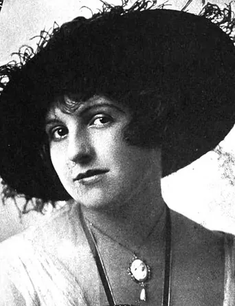

The genetics
The film was made at the height of the American eugenics movement and its whole plot rests on eugenic reasoning: insanity is treated as a hereditary taint that a man would surely pass to his children, so a responsible couple must not have any. Nobody does any science; the 'evidence' is a family history report, and the remedy is abstinence within marriage. The story makes the human cost of this reasoning vivid, as the bride sinks into despair, but it never questions the premise itself. The happy ending comes not from rejecting hereditarian ideas but from learning that the husband was adopted, so the tainted bloodline is not his. Modern genetics sees mental illness as influenced by many genes and by environment, not as a certain inheritance, but the film treats heredity as decisive, as many social-problem films of the 1910s did.
How genetics is portrayed
- Overall portrayal of genetics
- positive The film is 'based on eugenics' and never questions its premise: insanity is shown as surely inherited, and the happy ending confirms the hereditarian logic by removing the taint (Robert is adopted) rather than the belief. For its 1917 audience eugenic prudence is presented as sound, though its personal cost is dramatised.
- Outcome of the genetic intervention
- mixed The eugenic restraint brings Madeline to despair and thoughts of suicide, but it also spares the unborn from the feared taint until the adoption revelation lets the couple have children 'without fear' and joy returns.
- Robert Worthing and Madeline Francis
- hero Aim: benevolent (positive). The couple apply eugenic reasoning to their own marriage: because a family report says Robert's line carries insanity, they live as brother and sister to avoid passing it on. The film presents them sympathetically as responsible victims of a hereditary taint and rewards them at the end.
The story
In this American silent drama written by Ivan Abramson, Madeline Francis is about to marry Robert Worthing when she receives a report, through Robert's mother, that there is insanity in the Worthing family. Madeline fears that any children they had would inherit the madness, but to avoid the shame of a broken engagement she begs that the wedding go ahead. The marriage takes place in name only: Robert treats Madeline like a sister rather than a bride, and in her loneliness and despair she contemplates suicide. Finally Robert learns that he was adopted and so does not carry the Worthing family's hereditary insanity. Joy returns, and the couple can have children without fear. The Chicago censors passed the film for adults only and cut a passionate bedroom embrace.